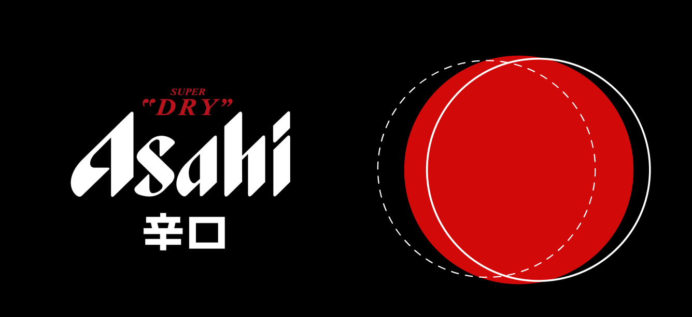
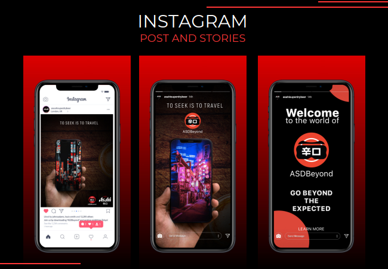
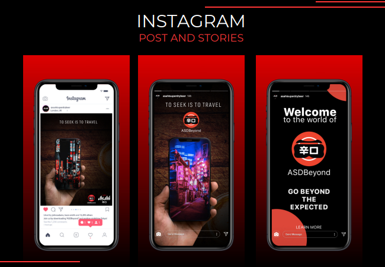

AdVenture 2022 Asahi Super Dry
Екип: Даниел Каменов, Дейвид Досев, Десислава Стоилова, Камелия Мишева
Описание: Asahi Super Dry е марка лагер с малък размер в международен мащаб – 47-ата по големина по обем извън Япония. Основна цел: топ 10 международни марки бира до 2030 г. Проект към AdVenture 2021/2022 г. - създаване на кампания за Asahi Super Dry!
Роля: Основната ми роля в този проект беше да разпределя задачите в екипа и да следя цялостния процес на изпълнение. Моята задача се фокусираше върху проучването на историята на бранда, пазарната ситуация и конкурентите.
Позициониране: Да минем отвъд очакваното. Асахи се представя като бранд, който иска да помага на хората, които са отдадени на мечтите си и на правенето на нови неща.
ВАЖНО! По бриф таргетът трябва да е микс от двата пола, с изискването да е 18+, без конкретна възрастова група.
Цел: Изграждане на осведоменост за Asahi Super Dry, набиране на потребители чрез превъзходния вкус на бирата.
Проблем: Хората искат да пътуват и да обикалят нови дестинации, но нямат нужните средства.
Инсайт: Много искам да пътувам, но нямам средствата за това.
Предизвикателство: Асахи се приема като японска бира, консумирана само в суши ресторанти.
Цели: Да създадем уникален опит за хората, които чувстват необходимостта от контакт с нови хора и които искат да споделят историите си. Да запознаем хората с другата по-модерна страна на Токио.
Голямата идея: Приложение за виртуална реалност, което да свързва хората, да ги пренася в друг свят и да им дава едно незабравимо приключение. Основно послание: "To seek is to travel".
Таргет: Хора, които се чувстват добре само когато се развиват и пробват нови неща.
Бюджет: 50% реклами в социалните медии, 25% ПОС, 15% билборди, 10% платени партньорства.
График: Всичко е в рамките на 2022 година! ПОС - април до септ, Билборди - април,май,юли и август, Партньорства - май и септ, Реклами в социални медии - от април до септ (без юни)
Медии: Out of home – ПОС, Билборд серии; Социални мрежи – Фейсбук, Инстаграм, Туитър, Гугъл и Ютюб
Визии
 
